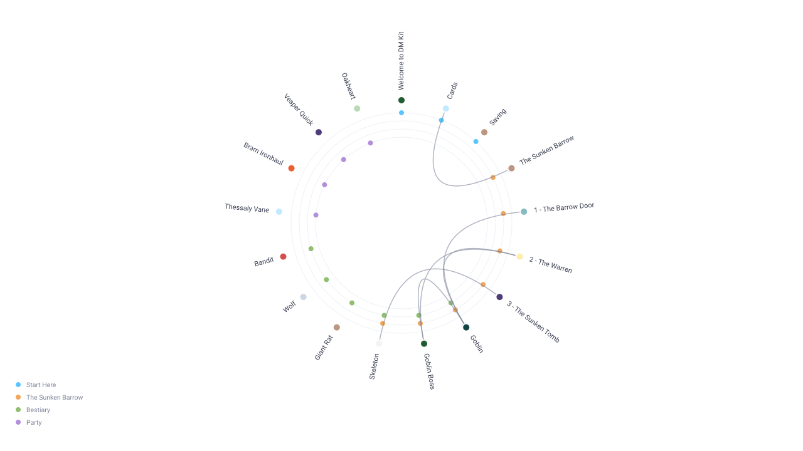
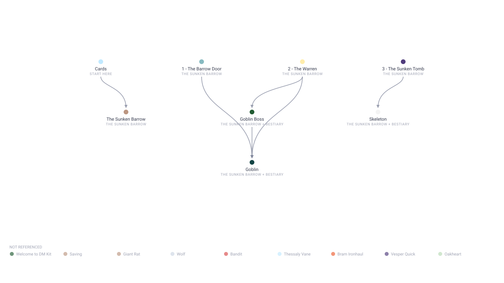
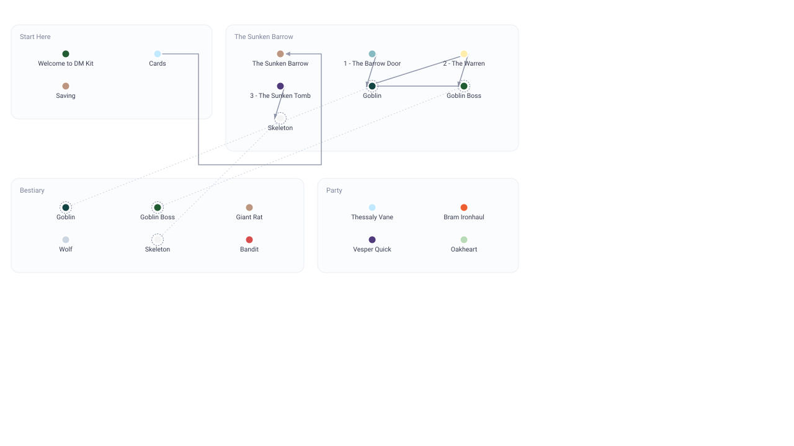

Card graph — three layouts
All three rendered from the real intro project: 17 cards, 6 references. None of them lets an edge cross a label.
A — Radial labels outside the ring, edges as chords inside it

B — Layered only the connected cards, arranged by direction; the rest in a tray

C — Regions your current layout, repaired: labels under dots, edges routed in gutters
